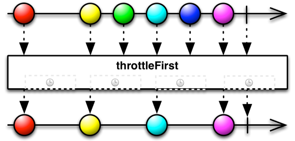
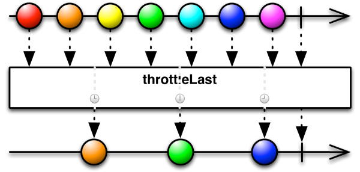
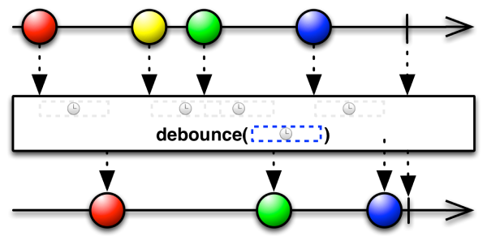
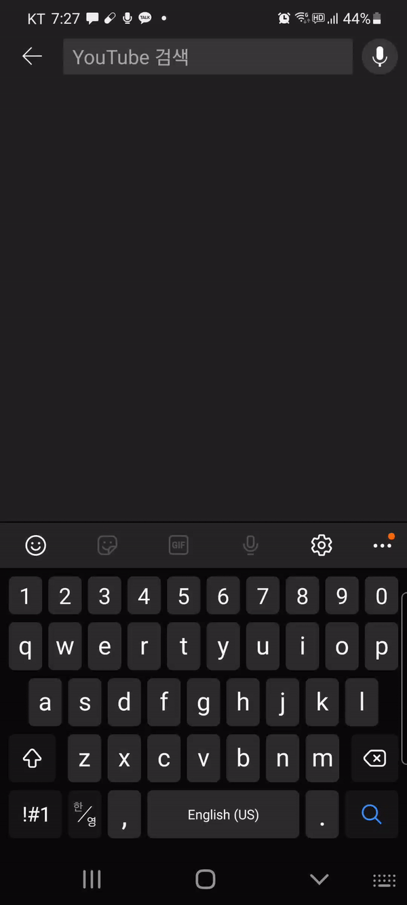

[RxJava, RxKotlin] Observable 변형하기 - throttle(), throttleFisrt(), throttleLast(), debounce()
throttle()
RxBinding을 사용하여 로그인 버튼을 클릭하면 서버와 통신하여 로그인 처리를 한다고 가정합시다.
1 | private val logInButton: Button by lazy { findViewById(R.id.activity_main_button) } |
만약 서버와의 통신이 끝나지 않았는데 또 다시 로그인 버튼을 클릭하면 문제가 발생할 수 있습니다. 이러한 문제를 다중 터치라고 합니다. throttle()를 사용하면 이 문제를 해결할 수 있습니다. throttle()함수에는 throttleFirst()와 throttleLast()가 있습니다.
(1) throttleFirst()
throttleFirst()는 일정 기간 동안 발생한 이벤트 중 첫 번째로 발생한 이벤트만 통과시키고, 나머지 이벤트를 무시합니다.

이제 첫 번째 클릭 이벤트가 발생한 후 3초 동안 클릭 이벤트를 무시할 수 있습니다.
1 | private val logInButton: Button by lazy { findViewById(R.id.activity_main_button) } |
버튼을 짧은 시간 여러 번 클릭해도 3초 동안은 첫 이벤트 한번만 발생하는 것을 확인할 수 있습니다.
(2) throttleLast()
throttleLast()는 throttleFirst()와 유사합니다. 다만 첫 번째 이벤트가 아니라 마지막 이벤트만 방출합니다.

debounce()
이번엔 검색창을 구현하다고 가정합시다.
RxBinding과 EditText의 텍스트 변화는 다음과 같이 탐지할 수 있습니다.
1 | private val editText: EditText by lazy { findViewById(R.id.activity_main_editText) } |
이 경우 글자 하나 바뀔 때 마다 서버에 데이터를 요청하는 것이 비효율적일 수 있습니다. 이러한 상황에서 Observable의 debounce()를 사용할 수 있습니다.
debounce()는 특정 시간이 지난 후에 마지막으로 들어온 이벤트만 수신합니다.

이제 2초가 지난 후 마지막으로 발생한 텍스트 변화 이벤트만 감지하도록 코드를 수정합니다.
1 | private val editText: EditText by lazy { findViewById(R.id.activity_main_editText) } |